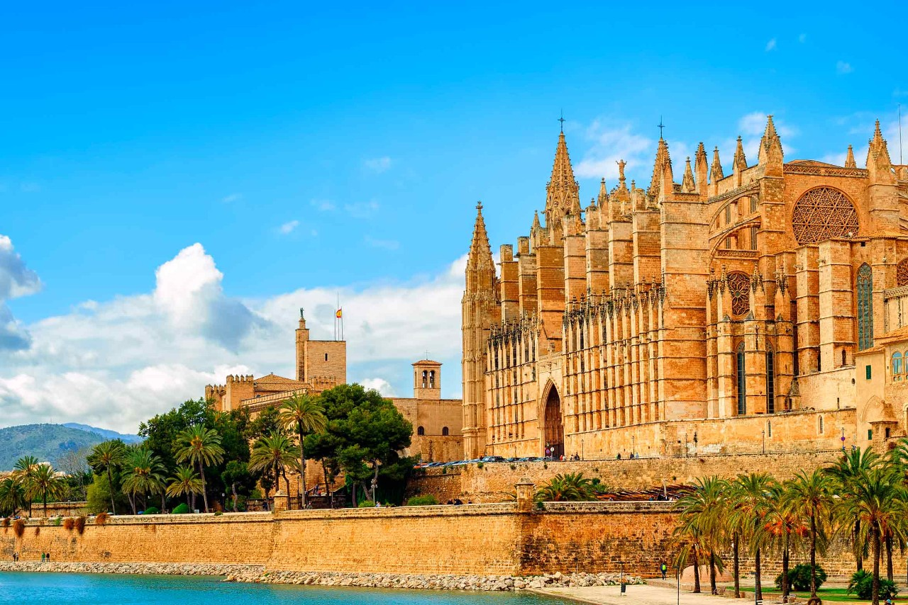
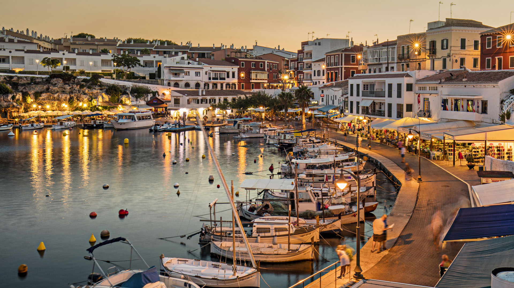
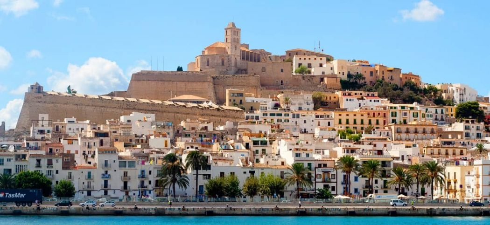

VIAJAR A MALLORCA
Si estás buscando unas vacaciones llenas de actividades, diversión y vida nocturna, Mallorca es el lugar perfecto para ti. Sin embargo, si prefieres un destino tranquilo, auténtico y en el que puedas disfrutar de preciosas playas y naturaleza incontaminada, Menorca es la isla que más se adapta a tus necesidades.
DESCÚBRELOVIAJAR A MENORCA
Menorca es una isla singular, que sorprende por la extraordinaria riqueza de su patrimonio arquitectónico, arqueológico y cultural, y por una historia apasionante, marcada por su condición de enclave estratégico en el centro del Mediterráneo occidental. Algunos de los monumentos que reflejan esta apasionante historia son: Naveta des Tudons, el poblado talayótico de Torre d’en Galmés, la Torre de Fornells, el Fort Marlborough y la Cova de s'Aigua. ¡Te invitamos a conocerlos!
DESCÚBRELOVIAJAR A IBIZA
Ibiza es el Paraíso en el Mediterráneo. Nuestro próximo destino ofrece 210 kilómetros de playas (algunas de las mejores de España) y casi 3.000 horas de sol al año, deliciosas calas de aguas turquesas, parques naturales y espectaculares acantilados.
DESCÚBRELO